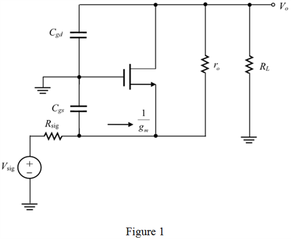
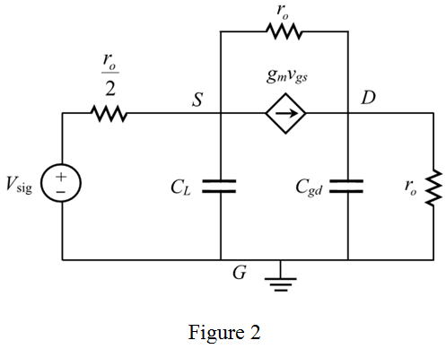
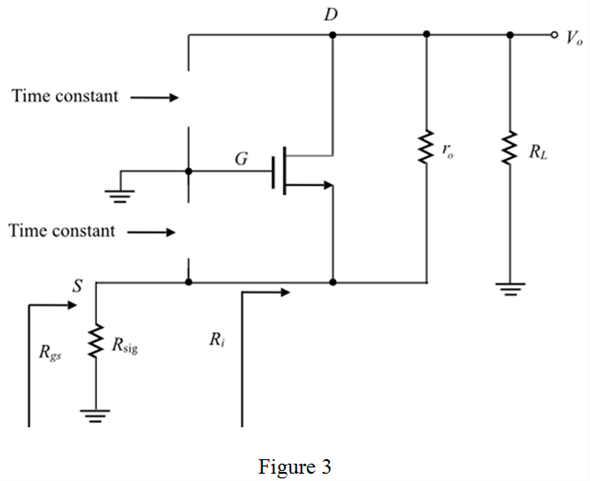
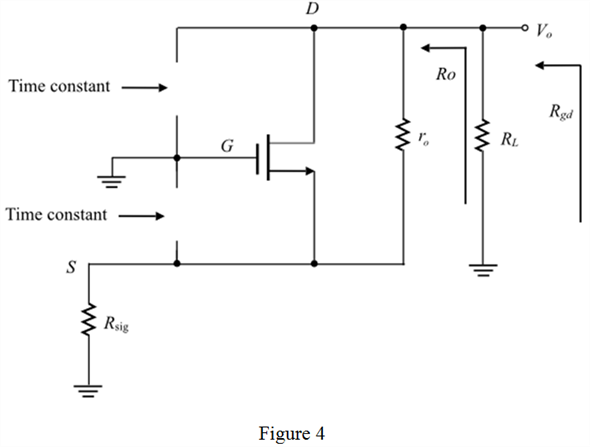

Step 1:
Consider the following common-gate amplifier circuit:

Step 2:
Consider that the common-gate amplifier have load resistance, and signal source have the resistance, . The mid band equivalent circuit is shown in Figure 2.

Step 3:
Open circuit time-constant method:
The open-circuit time constant method is widely used for determining the bandwidth of the analog circuit. It is not simple to determine the poles and zeros of the transfer function by quick hand analysis. Instead of this, the method of the open-circuit time constant is used to avoid the complexity in deriving the transfer function of the circuit.
To calculate the gate to source impedance and input impedance, set the input signal source to zero and open all the capacitors. Find the gate to source impedance seen by the open capacitor, .
The modified circuit for finding the impedances is shown in Figure 3.

Step 4:
By inspection, the gate to source impedance seen by the open capacitor, is,
From Figure 1 and 3, the input resistance is,
Step 5:
But here, . Therefore,
Therefore, the gate to source impedance is,
But here, . Therefore,
Step 6:
According to the open-circuit time-constant method, the time constant expression is derived by considering the various capacitors at a time in the circuit. The expression for time constant with contribution of capacitor  is calculated by removing all other capacitors in the circuit. This process is applicable to all other existed capacitors.
is calculated by removing all other capacitors in the circuit. This process is applicable to all other existed capacitors.
The total time constant  is,
is,
The pole at the input side is,
Here,Upper 3dB frequency,  ,
,
Gate to source resistance, ,
,
Gate to source capacitance,  ,
,
Gate to drain capacitance, ,
Gate to drain resistance,  .
.
Step 7:
The modified circuit for finding the impedances is shown in Figure 4.

Step 8:
By inspection, the gate to source impedance seen by the open capacitor,  is,
is,
From Figure 1 and 3, the input resistance is,
Step 9:
Therefore, the gate to drain impedance is,
Substitute  for
for  , for
, for  , and for in the expression of .
, and for in the expression of .
Since,  , therefore,
, therefore,

Step 10:
The unity current gain frequency of MOSFET is,
The upper 3dB frequency related with unity current gain frequency of MOSFET is,
Hence, the expression is proved.